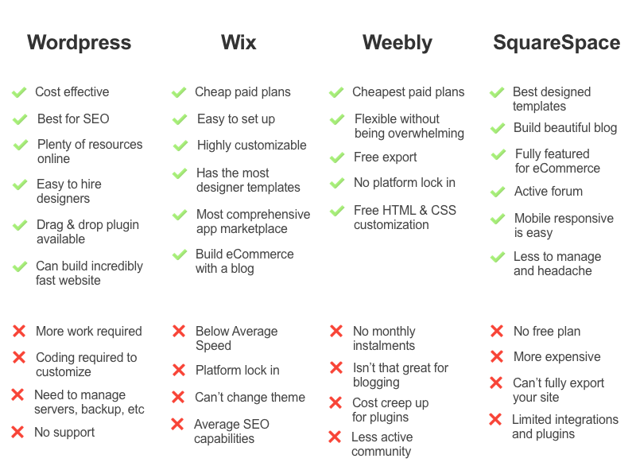
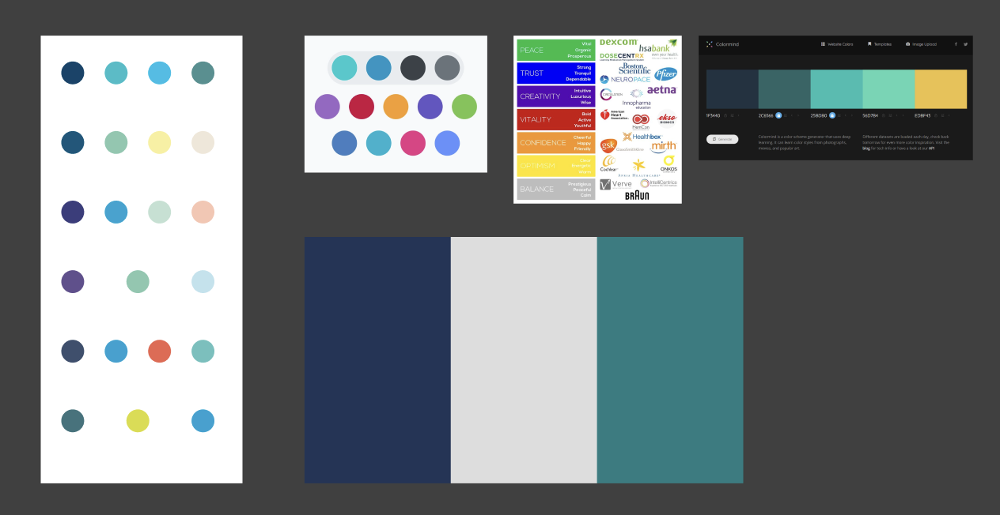
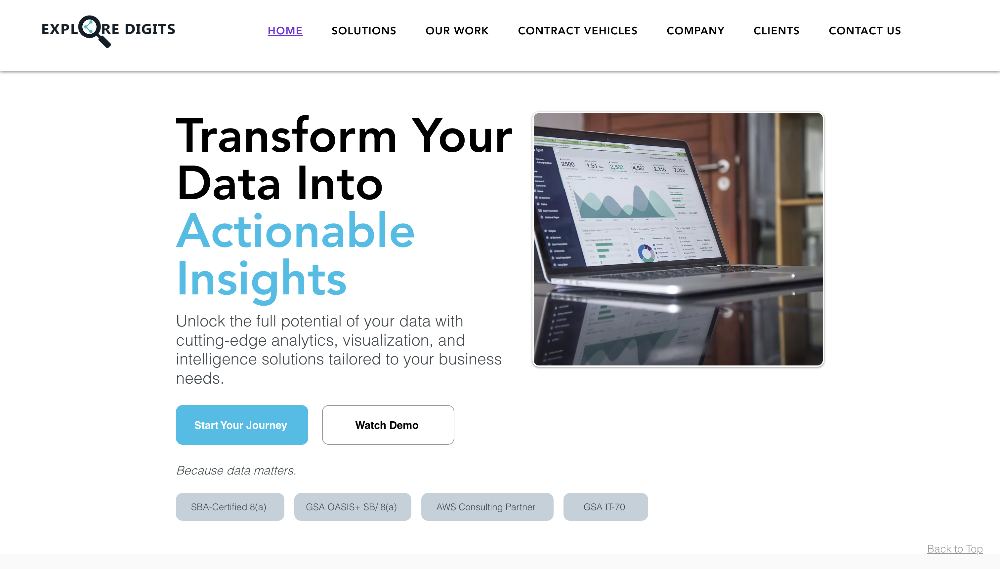

Working with Wix
The Problem
One of the first projects I took on at Explore Digits was redesigning the company website. The original website had been built in Weebly when the company was founded. It was outdated and did not have much information about the company’s work.
I worked with a teammate on the redesign. Along with creating the pages, we needed to decide whether to stay with Weebly or move to another website builder.
The How of Solving It
I started by exploring the existing Weebly setup to see what we could change. It did not give us the flexibility we wanted, so we compared other website builders against our budget and the features we needed.
I had used Squarespace and WordPress before, and a teammate suggested looking into Wix. After comparing the options, we chose Wix and shared the decision with leadership.

Brainstorming
Explore Digits had a logo and a basic color palette, but not much else had been established for the website’s visual identity.
We looked at other government contracting websites and noticed that many used blue or neutral colors. We initially wanted something different, so we chose a space theme with dark backgrounds and purple and teal accents. The teal came from the company logo.
Looking back, that direction was based more on wanting to stand out than on a clear reason connected to the company. That became an important part of the feedback we received later.

Prototyping
We built the website in Wix, using its components to organize the company’s projects and capabilities. Tabs kept related information together, and a homepage carousel linked to other pages. We also included a video of the company president speaking at a conference.
Wix gave us a way to build and publish within the project’s constraints, although some layout adjustments required manual work. My teammate and I learned how its components behaved as we built the pages.
Testing and Iterating
We published the first redesign in time for a major conference that Explore Digits was attending.
As the company grew and we received feedback from leadership and clients, we revised the website again. We moved to lighter backgrounds and changed the accent color to a shade closer to blue.
We also replaced tabbed content with cards. Tabs kept the layout compact, but required people to click through to discover information. Cards took up more space while making that information visible immediately.
The updated website used shorter copy and included dedicated pages for individual solutions. The main solutions page provided previews, with more detail available on each solution’s page. Changes in engagement or inquiries were not measured.

Lessons Learned
I initially put too much emphasis on making the website look different from other government contractors. After reviewing the feedback, I agreed that the first design did not fit the company as well as it could have.
The second version put more attention on the information and how people would find it. The visual choices had a clearer purpose instead of being driven mainly by personal preference.
I also gained experience working within Wix’s limitations and adapting a website as the company’s needs changed.
Link to the Explore Digits website